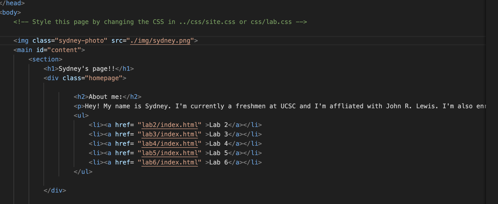
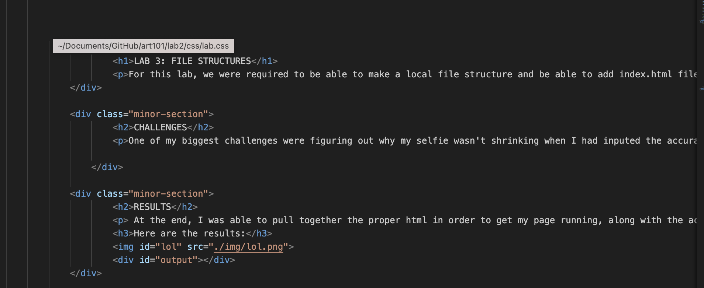

For this lab, we were required to be able to make a local file structure and be able to add index.html files.
One of my biggest challenges were figuring out why my selfie wasn't shrinking when I had inputed the accurate css. I had eventually figured out the main cause of this was due to a mistype when assigning the images id.
At the end, I was able to pull together the proper html in order to get my page running, along with the acurate picture width that I wanted.
Here, I had organized the local file strucutres into the format which the lab requested.
This is the Html code for my homepage!
This is how my homepage looks when opened on the default browser.
This is the Html code used to create my Lab 3 Page!